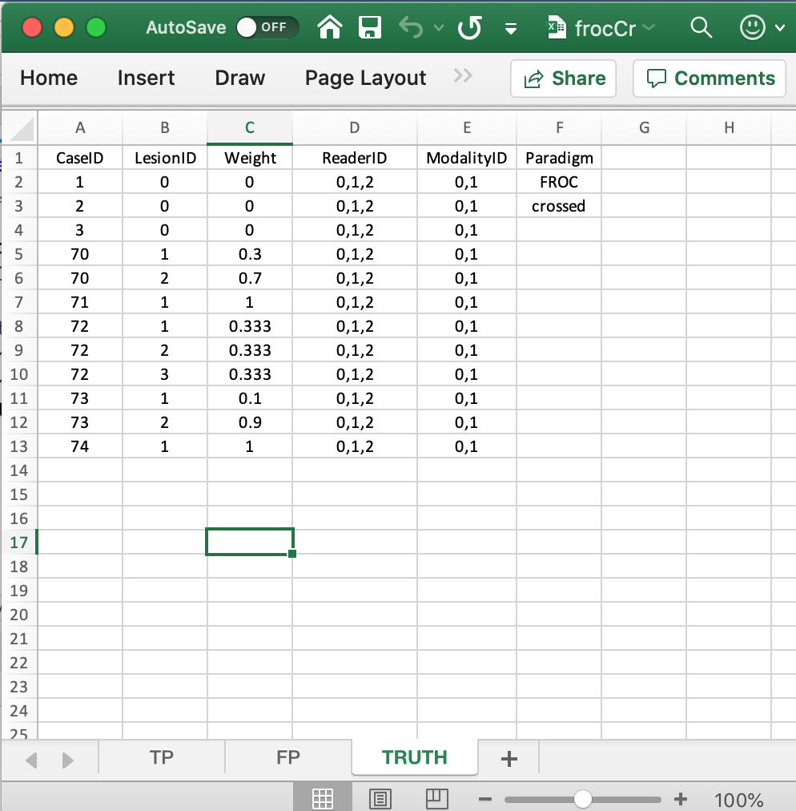

Chapter 00, Vignette 2: JAFROC Excel file data format: FROC CROSSED
Dev P. Chakraborty, PhD
2020-01-02
Ch00Vig2DataFormatFroc.RmdIntroduction
- The purpose of this vignette is to explain the data format of the input Excel file for FROC datasets. Details on the FROC paradigm are in my book (Chakraborty 2017).
- In the Free-response Receiver Operating Characteristic (FROC) paradigm (Bunch et al. 1978) the observer searches each case for signs of localized disease and marks and rates localized regions that are sufficiently suspicious for disease presence.
- FROC data consists of mark-rating pairs, where each mark is a localized-region that was considered sufficiently suspicious for presence of a localized lesion and the rating is the corresponding confidence level.
- By adopting a proximity criterion, each mark is classified by the investigator as a lesion localization (
LL) - if it is close to a real lesion - or a non-lesion localization (NL) otherwise. - The observer assigns a rating to each region. The rating, as in the ROC paradigm, can be an integer or quasi-continuous (e.g., 0 – 100), or a floating point value, as long as higher numbers represent greater confidence in presence of a lesion at the indicated region.
The Excel data format
The Excel file has three worsheets. These are named Truth, NL or FP and LL or TP.
The Truth worksheet
The Truth worksheet contains 6 columns: CaseID, LesionID, Weight, ReaderID, ModalityID and Paradigm.
- Since a diseased case may have more than one lesion, the first five columns contain at least as many rows as there are cases (images) in the dataset.
-
CaseID: unique integers, one per case, representing the cases in the dataset. -
LesionID: integers 0, 1, 2, etc., with each 0 representing a non-diseased case, 1 representing the first lesion on a diseased case, 2 representing the second lesion on a diseased case, if present, and so on. - The non-diseased cases are labeled
1,2and3, while the diseased cases are labeled70,71,72,73and74. - There are 3 non-diseased cases in the dataset (the number of 0’s in the
LesionIDcolumn). - There are 5 diseased cases in the dataset (the number of 1’s in the
LesionIDcolumn of theTruthworksheet). - There are 3 readers in the dataset (each cell in the
ReaderIDcolumn contains0, 1, 2). - There are 2 modalities in the dataset (each cell in the
ModalityIDcolumn contains0, 1). -
Weight: floating point; 0, for each non-diseased case, or values for each diseased case that add up to unity.
- Diseased case
70has two lesions, withLesionIDs 1 and 2, and weights 0.3 and 0.7. Diseased case71has one lesion, withLesionID= 1, andWeight= 1. Diseased case72has three lesions, withLesionIDs 1, 2 and 3 and weights 1/3 each. Diseased case73has two lesions, withLesionIDs 1, and 2 and weights 0.1 and 0.9. Diseased case74has one lesion, withLesionID= 1 andWeight= 1. -
ReaderID: a comma-separated listing of readers, each represented by a unique integer, that have interpreted the case. In the example shown below each cell has the value0, 1, 2. Each cell has to be text formatted. Otherwise Excel will not accept it. -
ModalityID: a comma-separated listing of modalities (or treatments), each represented by a unique integer, that apply to each case. In the example each cell has the value0, 1. Each cell has to be text formatted. -
Paradigm: In the example shown below, the contents areFROCandcrossed. It informs the software that this is anFROCdataset and the design is “crossed”, as in Vignette #1.

The structure of an FROC dataset
The example shown above corresponds to Excel file inst/extdata/toyFiles/FROC/frocCr.xlsx in the project directory.
frocCr <- system.file("extdata", "toyFiles/FROC/frocCr.xlsx",
package = "RJafroc", mustWork = TRUE)
x <- DfReadDataFile(frocCr, newExcelFileFormat = TRUE)
str(x)
#> List of 12
#> $ NL : num [1:2, 1:3, 1:8, 1:2] 1.02 2.89 2.21 3.01 2.14 ...
#> $ LL : num [1:2, 1:3, 1:5, 1:3] 5.28 5.2 5.14 4.77 4.66 4.87 3.01 3.27 3.31 3.19 ...
#> $ lesionVector : int [1:5] 2 1 3 2 1
#> $ lesionID : num [1:5, 1:3] 1 1 1 1 1 ...
#> $ lesionWeight : num [1:5, 1:3] 0.3 1 0.333 0.1 1 ...
#> $ dataType : chr "FROC"
#> $ modalityID : Named chr [1:2] "0" "1"
#> ..- attr(*, "names")= chr [1:2] "0" "1"
#> $ readerID : Named chr [1:3] "0" "1" "2"
#> ..- attr(*, "names")= chr [1:3] "0" "1" "2"
#> $ design : chr "CROSSED"
#> $ normalCases : int [1:3] 1 2 3
#> $ abnormalCases: int [1:5] 70 71 72 73 74
#> $ truthTableStr: num [1:2, 1:3, 1:8, 1:4] 1 1 1 1 1 1 1 1 1 1 ...- This follows the general description in Vignette #1. The differences are described below.
- The
x$dataTypemember indicates that this is anFROCdataset. - The
x$lesionVectormember is a vector whose contents reflect the number of lesions in each diseased case, i.e., 2, 1, 3, 2, 1 in the current example. - The
x$lesionIDmember indicates the labeling of the lesions in each diseased case.
x$lesionID
#> [,1] [,2] [,3]
#> [1,] 1 2 -Inf
#> [2,] 1 -Inf -Inf
#> [3,] 1 2 3
#> [4,] 1 2 -Inf
#> [5,] 1 -Inf -Inf- This shows that the lesions on the first diseased case are labeled 1 and 2. The
-Infis a filler used to denote a missing value. The second diseased case has one lesion labeled 1. The third diseased case has three lesions labeled 1, 2 and 3, etc. - The
lesionWeightmember is the clinical importance of each lesion. Lacking specific clinical reasons, the lesions should be equally weighted; this is not true for this toy dataset.
x$lesionWeight
#> [,1] [,2] [,3]
#> [1,] 0.3000000 0.7000000 -Inf
#> [2,] 1.0000000 -Inf -Inf
#> [3,] 0.3333333 0.3333333 0.3333333
#> [4,] 0.1000000 0.9000000 -Inf
#> [5,] 1.0000000 -Inf -Inf- The first diseased case has two lesions, the first has weight 0.3 and the second has weight 0.7. The second diseased case has one lesion with weight 1.The third diseased case has three equally weighted lesions, each with weight 1/3. Etc.
The false positive (FP) ratings
These are found in the FP or NL worksheet, see below. 
- It consists of 4 columns, of equal length. The common length is unpredictable. It could be zero if the dataset has no NL marks (a distinct possibility if the lesions are very easy to find and the modality and/or observer has high performance). All one knows is that the common length is an integer greater than or equal to zero.
- In the example dataset, the common length is 22.
-
ReaderID: the reader labels: these must be0,1, or2, as declared in theTruthworksheet. -
ModalityID: the modality labels: must be0or1, as declared in theTruthworksheet. -
CaseID: the labels of cases withNLmarks. In the FROC paradigm,NLevents can occur on non-diseased and diseased cases. -
FP_Rating: the floating point ratings ofNLmarks. Each row of this worksheet yields a rating corresponding to the values ofReaderID,ModalityIDandCaseIDfor that row. - For
ModalityID0,ReaderID0 andCaseID1 (the first non-diseased case declared in theTruthworksheet), there is a singleNLmark that was rated 1.02, corresponding to row 2 of theFPworksheet. - Diseased cases with
NLmarks are also declared in theFPworksheet. Some examples are seen at rows 15, 16 and 21-23 of theFPworksheet. - Rows 21 and 22 show that
caseID= 71 got twoNLmarks, rated 2.24, 4.01. - That this is the only case with two marks determines the length of the fourth dimension of the
x$NLlist member, 2 in the current example. Absent this case, the length would have been one. - In general, the case with the most
NLmarks determines the length of the fourth dimension of thex$NLlist member. - The reader should convince oneself that the ratings in
x$NLreflect the contents of theFPworksheet.
The true positive (TP) ratings
These are found in the TP or LL worksheet, see below.

- This worksheet can only have diseased cases. The presence of a non-diseased case in this worksheet will generate an error.
- The common vertical length, 31 in this example, is a-priori unpredictable. Given the structure of the
Truthworsheet for this dataset, the maximum length would be 9 times 2 times 3, assuming every lesion is marked for each modality, reader and diseased case. The 9 comes from the total number of non-zero entries in theLesionIDcolumn of theTruthworksheet. - The fact that the length is smaller than the maximum length means that there are combinations of modality, reader and diseased cases on which some lesions were not marked.
- As an example, the first lesion in
CaseIDequal to70was marked (and rated 5.28) inModalityID0andReaderID0. - The length of the fourth dimension of the
x$LLlist member, 3 in the present example, is determined by the diseased case with the most lesions in theTruthworksheet. - The reader should convince oneself that the ratings in
x$LLreflect the contents of theTPworksheet.
Summary
- The FROC dataset has far less regularity in structure as compared to an ROC dataset.
- The length of the first dimension of either
x$NLorx$LLlist members is the total number of modalities, 2 in the current example. - The length of the second dimension of either
x$NLorx$LLlist members is the total number of readers, 3 in the current example. - The length of the third dimension of
x$NLis the total number of cases, 8 in the current example. The first three positions account forNLmarks on non-diseased cases and the remaining 5 positions account forNLmarks on diseased cases. - The length of the third dimension of
x$LLis the total number of diseased cases, 5 in the current example. - The length of the fourth dimension of
x$NLis determined by the case (diseased or non-diseased) with the mostNLmarks, 2 in the current example. - The length of the fourth dimension of
x$LLis determined by the diseased case with the most lesions, 3 in the current example.
References
Bunch, PC, JF Hamilton, GK Sanderson, and AH Simmons. 1978. “Free Response Approach to Measurement and Characterization of Radiographic Observer Performance.” Journal Article. In American Journal of Roentgenology, 130:382–82. AMER ROENTGEN RAY SOC 1891 PRESTON WHITE DR, RESTON, VA 22091.
Chakraborty, Dev P. 2017. Observer Performance Methods for Diagnostic Imaging - Foundations, Modeling, and Applications with R-Based Examples. Book. Boca Raton, FL: CRC Press.